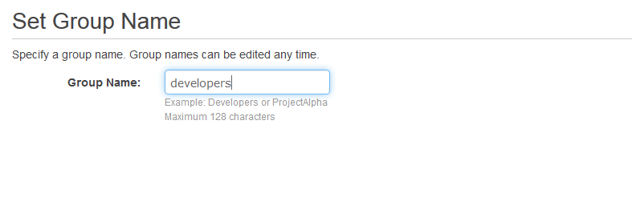
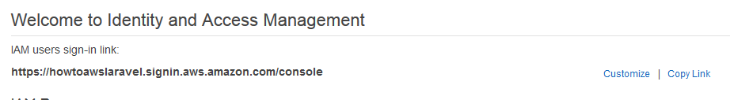
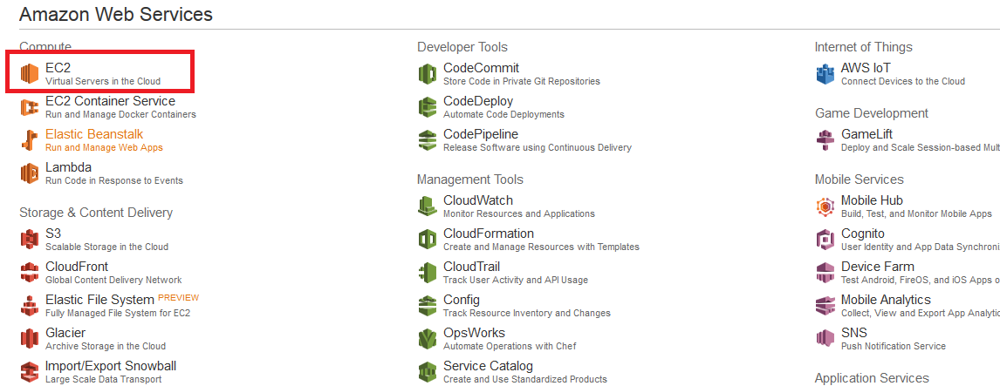
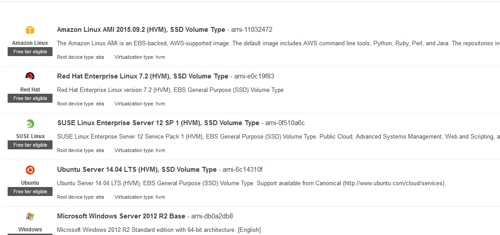

First navigate to the AWS free tier website. Amazon Free Tier Sign Up Page
Then click to go to the "Sign up for an AWS account" and follow the directions for signing up.
Once you have an account, log in to your account.
There are five steps to follow to better secure your account. Navigate to the Identity Access Management module to setup your security. When you first sign in Amazon will indicate that these steps are not done with red X's rather than the green check marks I have.
The following picture is a list of the security steps at the time of writing
Delete Your Root Access Keys. This is not as scary as it sounds. This step simply deletes the root access keys to the AWS command line tools through the root account. This does NOT delete root access to your account through the console (or web browser access). You really DON'T need root access through the command line tools for this tutorial, and Amazon doesn't believe you need it in general at all. So delete the keys for now. If you ever really do need them you can re-issue them later. It is important to note at this point you are logged in through the web console as the root user. You can access all services including the billing statements. In another step we will setup a user so you don't have to login as the root user all the time.
Activate MFA on your root account. Click on the link in the drop down and follow the steps to setup your Multi-Factor Authentication of your root account. It is important to do this because there are bitcoin miners out there looking to get access to your account. This is an extra security measure to help protect your account. You can have them simply send you a code through a text message or use something like the Google Authenticator App.
Create individual IAM users. Here we want to create a Power User through IAM so that you have a user with the privileges you need to launch an EC2 instance, but not having to do this through the root account access. The idea is, the less you access the root account, the less you expose it to the world. If a hacker gets hold of your power user account you can kill it with your root account. If they get hold of your root account you will need to contact Amazon to stop the bleeding.
Click on the Manage Users button in the dropdown area of the five steps.
Click on the Create New Users button on the User Management page. (You can see I have a user already created)
Then add the user name you wish to use and click create in the bottom right corner. If you will have multiple users you can add extra users on the extra lines provided.
After creating the user you will be taken to a page where the users 'key' credentials have been created. You will need to download these security credentials now. These are the private encryption keys the user will need in order to use any AWS command line tools. Save these somewhere. We will not need these for the tutorial, but you may want them for future use. If you lose the key or believe it is compromised you can inactivate the key and create a new one.
Then it is important to setup the user with a password so they can access the AWS console (at least for this tutorial we will use the AWS console. Select the newly created user. Then click on user actions and manage password.
You can assign an auto generated password and force them to change it at login or assign yourself a custom password if this is for you
Use groups to assign permissions. Here is where you define a group and the access permissions. So we will make a developers group with Power User access. This will allow the user that we created (and will use) to launch an EC2 instance which we will use as our webserver.
Click on the Manage Groups button in the dropdown menu on the list of 5 security items
Click on the Create New Group button in the upper left hand corner
Give the group a name such as "Developers"
Select a policy type for the group. You can attach multiple policies if you'd like. This essentially sets the services the user can access such as EC2, S3 or any other Amazon service you see in the main dashboard.
We will search for and set the group to have PowerUser Access Policy which is a standard AWS Policy (Notice I have entered 'PowerUser' in the search box to filter the results). Select the PowerUserAccess and click on the Next Step button in the bottom right corner
Then on the Review Page click on the Create Group Button in the bottom right hand corner
You will be taken back to the groups page and there you will see your new group. In my case it's called developers. Click on the group now so we can add our user
On the developers group page select the Add Users to Group button to add your user to this group.
The page will show you a list of your users that you can make selections to add to the group. In this case I have only 1 (as I deleted my previous S3User). Once you have selected your user, click on the Add Users button in the bottom right hand corner.
Apply an IAM password policy. This is a good idea to set. It's very straightforward. Click on the link in the dropdown and set a policy that you wish to enforce. This can require that user passwords are minimum 8 characters, have at least one non-alphanumeric character, passwords last only X amount of months, can't re-use old passwords, and other options that are all very easy to set. If you are going to have more that just yourself access the account this is an import policy to set.
Extra Step: Customize the sign in link
From the IAM Dashboard page (with all Amazon's 5 steps to secure your account) Select the 'Customize' link to right of the "IAM users sign-in link"
Then on the popup window set the Account Alias. Here we have set 'howtoawslaravel'. Warning the account alias can only contain digits, lowercase letters, and hyphen. Then click create.
You will see the new link that the user you created can now sign in through. Note the root user must sign in through a different page. If you navigate to this page AWS provides a link to click on to sign in with your root user account if you need it.
Sign into your PowerUser account through your IAM users sign-in link
When you sign up to Amazon you will by default be put into their US Northwest availability zone, which is natural as Amazon has its headquarters in Seattle. Amazon has availability zones around the world and if you want your application to be served by somewhere closer to you, you should switch availability zones in the upper right hand corner and launch your EC2 instance from that zone and the EC2 instance is tied to a specific availability zone.
Now that we have our preferred availability zone set we are ready to launch the EC2 instance. Navigate to the EC2 Dashboard from the main dashboard.
Click on the blue 'Launch Instance' button in the middle of the page.
Choose an Amazon Machine Image. Select the Ubuntu Server 14.04 LTS in the middle of the page
Choose an Instance Type. Select the t2.micro (free tier eligible) Instance. This determines the CPUs and RAM your instance will have. If you have larger computing requirements you will have to choose an more powerful instance, but you will also have to pay for it (see the Amazon documentation for pricing details). Click 'Next: Configure Instance Details'
Configure Instance Details. On the configure Instance Details Page there are a number of options to set. We will use all of the standard options. I will explain each option as best I can.
The number of instances is straight forward. Here we only want 1. Increasing this, will increase the number of EC2 instances you launch. Free tier usage only allows for 1 instance running for about a month. So if you launched 2 at the start of the month and had them running for the full month then you would have to essentially pay for the 2nd one. (Free tier usages allows for 750 hours of EC2 instance usage).
Purchasing option: Request Spot instances. This is done generally to lower the bill. This may be used where you are processing large amounts of data that can be broken up into different processing parts and are not urgent. Essentially you can run an instance at lower cost when their is lower activity on Amazon. This would be useful for DNA sequencing where you might need large computing resources but do not need to process results urgently so the server does not need to be up and running constantly like a website.
Network. On newer Amazon accounts, Amazon has something called a VPC (Virtual Private Cloud). This is just a logically isolated section of Amazon Web Services. This helps to keep your servers (ec2 instances) separate from other account servers (that exist on the same hardware) and if you need it you can setup multiple VPC's and separate sets of servers that may be running different applications. We will use the default VPC setup by Amazon for now as the VPC setup and configuration is another topic.
Subnet. The subnet setting allows you to set your subnet to any of the specific Amazon subnets for the availability zone that you are in. If you leave this setting as no preference, Amazon will randomly and automatically assign your instance to one of its subnets. Here it is easy enough just to leave the setting as default.
Auto-assign Public IP. We will choose 'Use subnet setting (Enable)' for this choice. Essentially your instance will be assigned an IP address automatically from Amazon's pool of public IP addresses. If you disable this you will need to go through the steps in the Elastic IP address section to set up your instance's public IP address if you need one.
IAM role. We will leave this as none. Roles are used as a way to manage security and access between different Amazon resources. You may want your EC2 instance to access an S3 bucket or a database set up with Amazon RDS (Relational Database Service). You can set roles so they have access to use S3 or RDS. This allows you to manage the access through roles rather then setting up public private key pairs for encryption between instances.
Shutdown behavior. Here I will select stop as the shutdown behavior. As I am using on instance for my program on the free tier I may want to start and stop the instance to prevent from going over my free tier usage or config changes. If you are setting up a system that automatically spins up an instance if one goes down, then you will likely want the shutdown behavior to be set as terminate. When the instance is shutdown it is then termintated and all data on the instance is lost. With these systems you will need to use EBS (storage) or S3 buckets to store database information or other resources.
Enable termination protection. I will leave the Protect against accidental termination off. Essentially this requires an extra step to terminate your EC2 instance. If you select this setting and at some point want to terminate your instance you have to disable the feature before being able to terminate the instance. This may be more useful when there are multiple users and some are using command line features where they might send terminate commands to multiple instances from the command line (which may accidentally catch yours if the features is not on).
Monitoring && Tenancy. The last two options will incur extra charges if you change the settings so I suggest leaving them as is for the tutorial (and use them only if you need them for your application). Changing the tenancy to Dedicated can increase the cost significantly.
Advanced Details. The one thing we do want to change on this page is the "Advanced Details" section which we will need to click on the dropdown to view. Here we can enter a bash script that will be run as the root user at startup. Since it is the root user we will make sure we don't use 'sudo' when running the script. The following is the snippet that I copied and pasted into the textbox. Ensure the 'As text' radio selection is selected. The code simply updates the Ubuntu server registries and upgrades the system. Then it installs git, apache, and the php5 apache module. While doing this it will install php5 as a dependency. Then ensures that the php5 module is enabled with apache.
#!/bin/bash
# this script is run as root, don't use sudo
# update the repositories, and upgrade the current software
apt-get update -y && apt-get upgrade -y
# install apache and php
apt-get install -y git apache2 libapache2-mod-php5
# ensure the php5 module is enabled
# (I have found the install process automatically does this,
# but adding it ensures it happens)
a2enmod php5
service apache2 restart
Add Storage. The next step is to add or adjust your storage. As I don't need a database for the application I will not set up any extra storage. If you need persistent storage this would be a good point to add the storage. When an instance is terminated the volume associated with root will be terminated as well, but any additional volumes that have been added will remain and can be managed through Elastic Block Store (in the EC2 dashboard). The click on Next: Tag Instance
Tag Instance. Here is a good place to give the instance some tags so that you know what you have set it up for in case you end up generating many instances. When you are done click the button Click on Next: Configure Security Group
Configure Security Group. This is an important step. Here we set how your instance is being accessed. Since we want this to act like a web server we will add HTTP and HTTPS so that the web pages can be accessed and SSH so that we can login to the server and do some configuration. Since the SSH comes up by default lets configure that setting to be more secure by selecting the 'source' dropdown on the far right and choosing My Ip. Amazon will put your current Ip into the source table. (Note if you have a dynamic IP address you may have to change this through the Amazon Console later if your IP changes, but this is a better option than leaving the SSH access open to the world for access. Allowing access to 0.0.0.0/0 would allow anyone to attempt to login and could leave your instance open to a brute force attack.) Then we will want to add two more rules setting the first to HTTP and the second to HTTPS. The standard settings will suffice. Then click on Review and Launch
Review and Launch. Here look over your instance details and make sure you are happy with your choices. Then launch the instance. IMPORTANT. Make sure to create and download a private key file. We will need this file to log into the server through ssh. It may take a few minutes to launch the instance, but I have found it to be very quick most of the time.
Open a terminal in your local linux or mac osx installation. (If you are using windows you will need to use putty and follow putty's instructions for ssh into another terminal). With the linux or mac installation make sure you have an ssh program installed. This comes default with an Ubuntu 14.04 LTS installation. I always change my directory so that I am in the same folder as the "ssh" key file I downloaded for my EC2 instance (this is the .pem key file downloaded when you launch the instance).
When you are in the file with your testSiteKey.pem key file you will need to make sure your key file has the proper file permissions (400) of read only for the owner. Enter the following on the command line to change the permissions on the testSiteKey.pem file. (replace testSiteKey with your key file name)
chmod 400 testSiteKey.pem
Then go to the Amazon web console and get your EC2 instance's IP address.
Let's say this is our first time logging into an AWS Ubuntu server and we don't know the login name. Simply attempt to login in as the root user and the instance will return a message indicating the user name you need to use. (If you used Amazon's general rpm based operating system, then the user will be ec2-user for instance). Enter the following code to attempt to log in as the root user. The IP address is the first parameter (and one you will need to change). The -i specifies the key file (testSiteKey.pem will need to be changed to match your file name) and the -l specifies the user name you log in so root in our case.
ssh 54.206.98.157 -i testSiteKey.pem -l root
That code should generate a message telling you that you should login as the 'ubuntu' user. So use the same line but replace root with ubuntu
ssh 54.206.98.157 -i testSiteKey.pem -l ubuntu
First we will need to download and install 'composer' which is a php package manager similar to pip for python. This is the link to the composer site to download the composer file Compser Download Site. The following is the code I used to install composer and move it into a directory that is in my path so I can just use "composer command" from the command line. If this code doesn't work for you make sure to check the official documentation
php -r "readfile('https://getcomposer.org/installer');" > composer-setup.php
php -r "if (hash('SHA384', file_get_contents('composer-setup.php')) === 'fd26ce67e3b237fffd5e5544b45b0d92c41a4afe3e3f778e942e43ce6be197b9cdc7c251dcde6e2a52297ea269370680') { echo 'Installer verified'; } else { echo 'Installer corrupt'; unlink('composer-setup.php'); }"
php composer-setup.php
php -r "unlink('composer-setup.php');"
sudo mv mv composer.phar /usr/local/bin/composer
Then we can install the Laravel Installer with the following code. Again check the Laravel Document at Laravel
composer global require "laravel/installer"
Next, lets get the project code from Github. Change into the /var/www/ directory. And sudo git clone the project into that directory
cd /var/www/
sudo git clone https://github.com/muelljef/ExampleSite.git
cd ExampleSite
Then lets run a composer install (from the root directory of the project) to install all the project dependencies. The vendor folder is ignored by the .gitignore file and will be installed when you run the composer install.
sudo composer install
Laravel uses a .env file to set a number of system environment variables such as environment type, debug settings, database names and passwords. Lets copy the .env.example file into a .env file and make sure we set the environment to production and the debug to false as this is a live server available to the public. We don't want to be showing off all the data in the debug stack traces if there is an error anywhere in the program.
It is really important to manage your environment settings with the .env file rather than hard coding your database information into the config files. It is standard to ignore the .env file in the github repo, but the config files are typically included in the git files as you may need to edit and save the changed configuration. It is much easier just to use the environment variables in these files defined in the .env file. Additionally it is natural for the names and passwords to be different between local and production environments, but the configurations is the same. So these settings are normal to edit separately.
The following commands copy the .env.example file into a new file called .env and then we open the .env file in vim
sudo cp .env.example .env
sudo vim .env
Then change the following variables to match that below. You will need to change your url to the IP address of your instance.
APP_ENV=production
APP_DEBUG=false
APP_URL=http://54.206.98.157
Then we need to generate an application key for our program. If the application key is not set the user sessions and other encrypted data will not be secure! (Laravel Installation Documentation).
sudo php artisan key:generate
Last we need to set the ownership and permissions of the files so that the web server has the proper access and permissions without allowing external users to modify files.
Here we are changing the ownership of the files (recursively) to the user root and the group www-data. www-data is the user and group the apache2 webserver operates as so the group permissions will be applicable to the web server. Since we are changing the files recursively we are changing all the files in the /var/www/ folder to have the same ownership
sudo chown -R root:www-data /var/www
Now lets change the permissions of the root folder and all children folders to have read, write, execute access for the owner and group (webserver) as this is what they need to operate. The webserver will need to be able to access, execute, and write to some files such as logs in the directory structures.
The following will achieve the proper directory permissions. The first line will change the permissions of the /var/www/ folder so that the folder has read, write, execute for the owner and group and read execute for other. The 2 bit out front means all files created in this directory will inherit www-data as the group no matter who creates them.
The find function will find all 'files' under the /var/www/ folder and child folders that are folders (-type d) and will execute the sudo chmod 2775 command. The final part of {} + is part of the exec option attached to the find command that builds a list of folders to execute the command on so the command is executed fewer times.
sudo chmod 2775 /var/www
sudo find /var/www -type d -exec sudo chmod 2775 {} +
Then we will set the files to be read write for the owner and group (web server) and read only for other or the public. We use the find command in a similar way to the folders but change the permission settings to what we need. The -type f indicate files rather than folders.
find /var/www -type f -exec sudo chmod 0664 {} +
Now that we are ready with out project, we can setup the server to serve our website.
First we need to edit the apache2.conf file. (Note: these files and directory structures may be different for rpm based systems). Use the following command to edit the apache2.conf file
sudo vim /etc/apache2/apache2.conf
Then navigate the file to the <Directory /var/www> tag as shown below
And edit those lines to be the following adjusting for your server
<Directory /var/www/ExampleSite/public/>
Options Indexes FollowSymLinks
AllowOverride All
Require all granted
</Directory>
We changed the directory to the public folder of our website so visitors only access our index.php file which 'launches' our application (and helps protect our server and files from outside access). Then we want to set AllowOverride to all so that the apache2 rewrite module can serve different files based on the routing in the php application.
Now we need to create a site specific configuration file and enable our site (and disable the default apache2 server site). We will copy the 000-default.conf file and edit that file for our site. Execute the following commands replacing the example-site with your site name
sudo cp /etc/apache2/sites-available/000-default.conf /etc/apache2/sites-available/example-site.conf
sudo vim /etc/apache2/sites-available/example-site.conf
Edit the document root to have the /var/www/ExampleSite/public/ as the document root
Then we need to enable our website and disable the default site
sudo a2dissite 000-default.conf && sudo a2ensite example-site.conf
The a2dissite command disables the default site and the a2ensite command enables the website
Then we will need to enable the apache2 rewrite module through the a2enmod command and then restart the server as this command requries a restart (the system message will indicate this)
sudo a2enmod rewrite
sudo service apache2 restart
Your website should be up and running and you should be able to navigate to other pages. If you are experiencing issues be sure to check the error logs, /var/log/apache2/error.log
Another common issue I had was not having the right permissions or ownership and needing to simply rerun the chmod and chown commands outlined earlier. Also a composer install will be needed if you add any composer dependencies in your local project.
With this setup I can do a git push from my local machine to Github, and then a git pull on the server to update my project.
Now if you have a local Laravel site you can get it up and running on AWS EC2 instances. Its worth noting many of the steps after logging into the server will be applicable for ubuntu servers that are managed through other sites like Digital Ocean.